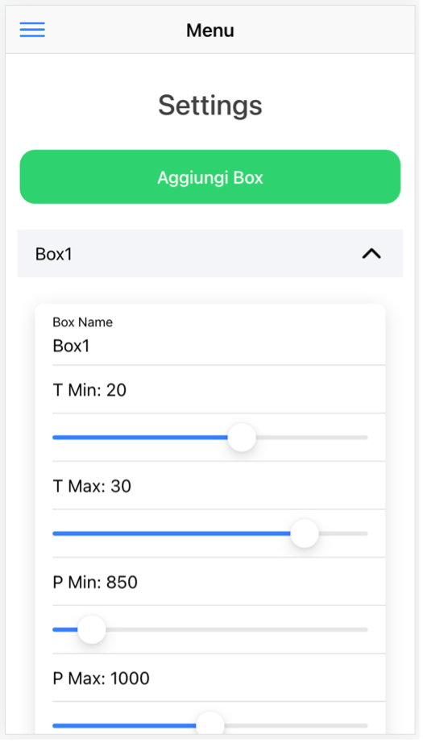
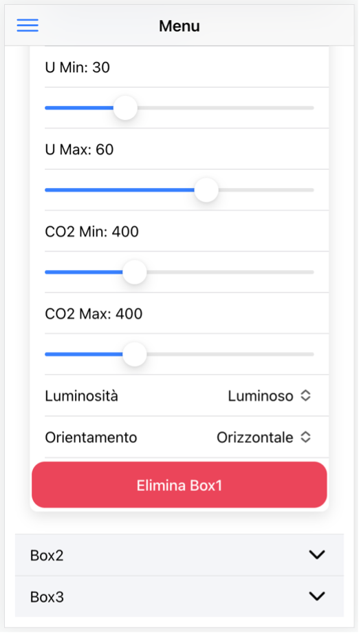
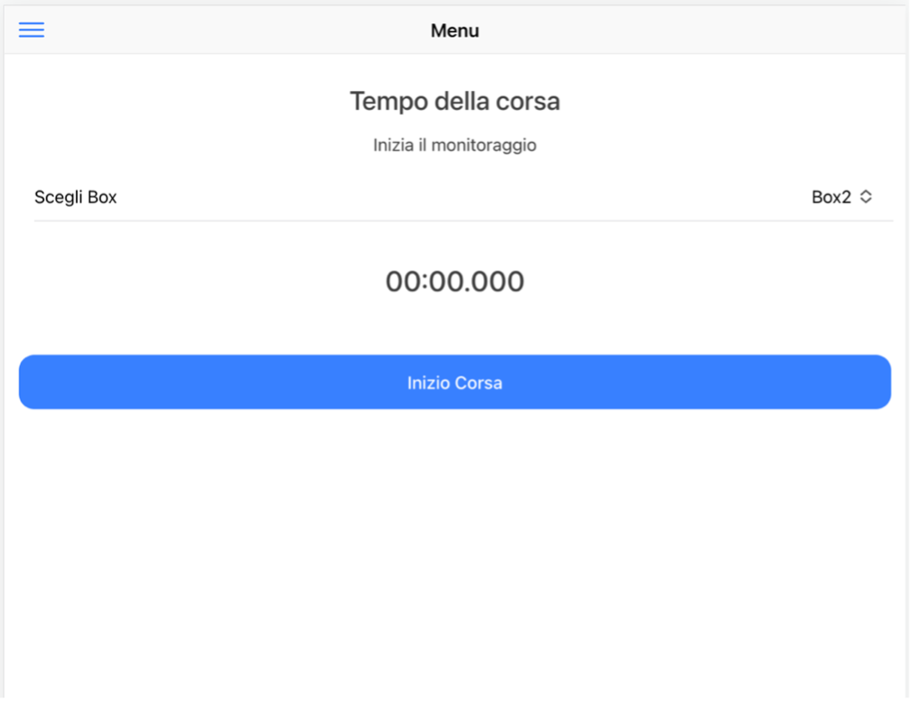
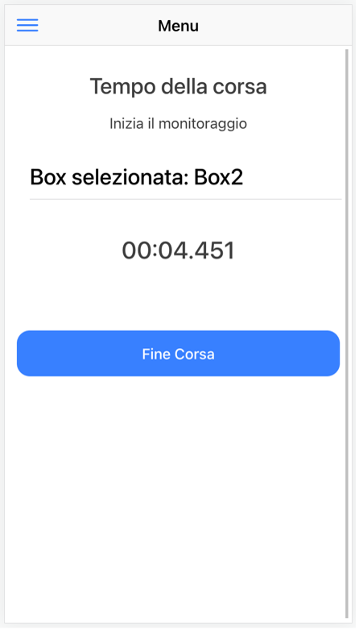
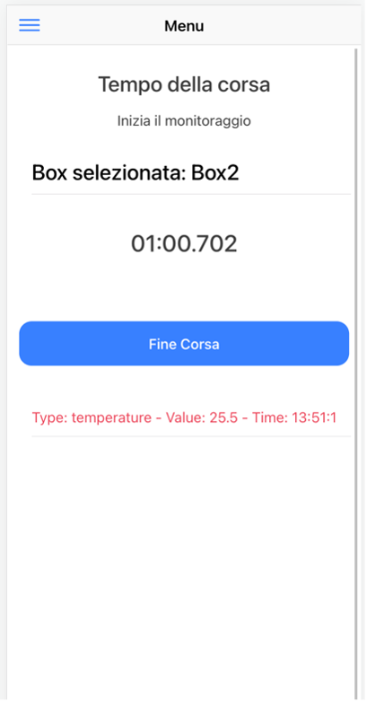
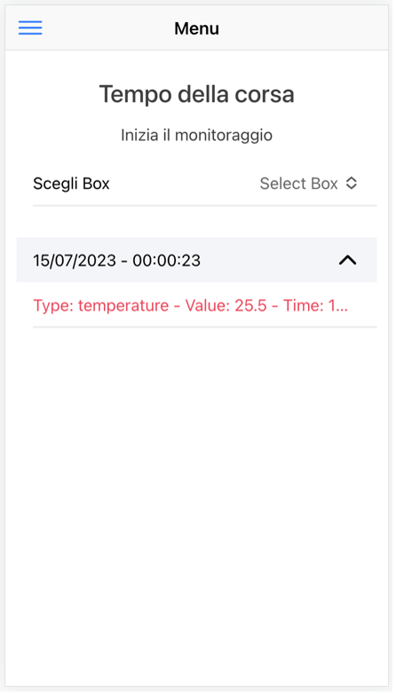
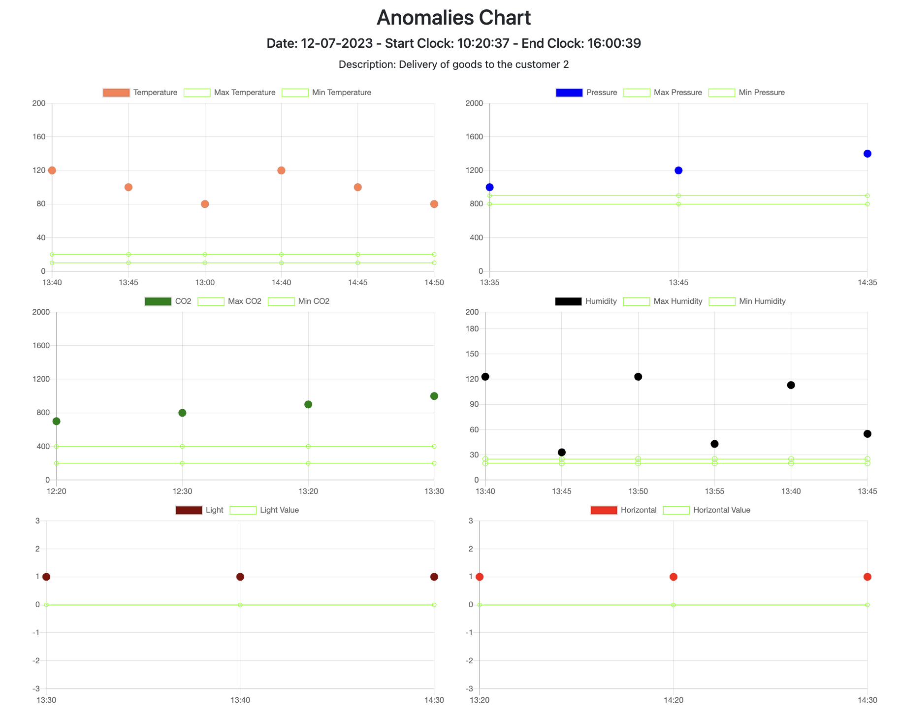
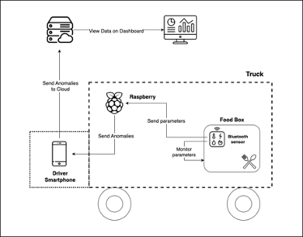

Nome del progetto e repository github
Nome del progetto: Sistema di tracciabilità ed esportazione dati
Repository del sito di presentazione progetto: https://github.com/UniSalento-IDALab-IoTCourse-2022-2023/wot-project-2022-2023-Presentation-Mele-DeNunzio
Tutti i Repository del prototipo (codice):
Membri del team
| Matricola | Cognome | Nome | GitHub | |
|---|---|---|---|---|
| 20086387 | De Nunzio | Francesco | francesco.denunzio@studenti.unisalento.it | Francesco De Nunzio |
| 20085657 | Mele | Emanuele | emanuele.mele@studenti.unisalento.it | Emanuele Mele |
Presentazione del progetto
L'industria del food delivery sta vivendo una crescita significativa negli ultimi anni, grazie alla crescente domanda di comodità e convenienza da parte dei consumatori. L'idea di poter ordinare cibo direttamente a casa propria o in ufficio è diventata sempre più diffusa, portando a un'espansione dei servizi di consegna di cibo offerti da ristoranti, catene di fast food e piattaforme online. In questo contesto, l'integrazione dell'Internet of Things (IoT) nella quotidianità riveste un ruolo sempre più importante. L'IoT fa riferimento alla rete di dispositivi connessi tra loro e capaci di scambiare dati, consentendo un monitoraggio e un controllo avanzati in diversi settori, incluso quello del food delivery. Nello specifico, il progetto si concentra sull'importanza di utilizzare contenitori isotermici o termici conformi alle normative vigenti, al fine di garantire il mantenimento delle temperature e dei requisiti qualitativi e sensoriali dei cibi durante il trasporto. L'obiettivo è la realizzazione di un sistema che consenta il monitoraggio delle condizioni di trasporto del cibo, analizzando parametri come per esempio la temperatura (considerando che alcuni alimenti devono essere trasportati caldi, altri freddi e altri a temperatura ambiente), l'assenza di contaminazioni esterne, i tempi di trasporto e altri fattori critici. Il sistema proposto comprende una componente hardware dedicata al monitoraggio delle condizioni interne delle Box presenti nel veicolo, come temperatura, umidità e pressione. Parallelamente, si ha lo sviluppo di un sistema software composto da un backend e un front-end. Il back-end è responsabile della raccolta, elaborazione e memorizzazione dei dati provenienti dai sensori, nonché dell'esportazione dei dataset tramite API REST. Inoltre, offre funzionalità per il monitoraggio in tempo reale dei dati, la rilevazione di eventuali anomalie e la consultazione dello storico delle informazioni memorizzate. Il front-end, invece, permette di monitorare graficamente i dispositivi utilizzati nel sistema. È stata sviluppata, oltre alla dashboard che mostra le anomalie, un'applicazione mobile che verrà fornita al conducente con il compito di avvisare quest’ultimo in caso di problematiche o irregolarità. Tutto ciò rappresenta un'importante soluzione per migliorare l'efficienza e la qualità del trasporto dei prodotti alimentari, per esempio destinati alle mense. Grazie al monitoraggio accurato delle condizioni di trasporto e alla rilevazione tempestiva di eventuali anomalie, sarà possibile garantire che i cibi raggiungono le destinazioni finali mantenendo intatte le loro caratteristiche sensoriali e qualitative.
Funzionalità e architettura
Componenti del progetto
| Funzionalità complete | Descrizione |
|---|---|
| Back-End Dashboard |
Il back-end della Web-Application ha il ruolo di esporre le dashboard che evidenziano le anomalie. Il codice è scritto in Java, utilizzando il framework Spring. Il lato server dell'applicazione ha la responsabilità di memorizzare i percorsi e salvare le anomalie in tempo reale dopo che vengono analizzate. Il back-end è affiancato dal database NoSQL MongoDB per memorizzare i dati. Gli endpoint principali sono: /api/addRoute Tramite una POST con un json come segue a questo endpoint si crea un nuovo percorso in cui si specifica quali sono i range che le Box dovrebbero rispettare. { "description": "Trasporto di cibo pronto", "anomalies": [ { "type": "temperature", "minValue": 25, "maxValue": 35 }, { "type": "humidity", "minValue": 20, "maxValue": 50 }, { "type": "pressure", "minValue": 900, "maxValue": 1100 }, { "type": "co2", "minValue": 300, "maxValue": 500 }, { "type": "light", "minValue": 0, "maxValue": 1 }, { "type": "horizontal", "minValue": 0, "maxValue": 1 } ] } |
| Back-End Nordic Thingy:52 - Raspberry Pi |
Il cuore del prototipo è composto dalle misurazioni dei valori ambientali tramite la board Thingy:52, e al loro trasferimento via bluetooth al Raspberry Pi, dove questi dati sono analizzati. Il Raspberry si interfaccia con il dispositivo Nordic Thingy:52 grazie alle sue bluetooth api, ed espone un server Node.js che permette la gestione delle operazioni fondamentali riguardanti l’analisi dell’ambiente. Questa applicazione Node.js utilizza il framework express, e presenta degli endpoint con lo scopo di selezionare i parametri ambientali che dovrebbero essere rispettati dalla Box, avviare l’analisi dell’ambiente, e terminarla. Sul Raspberry gira anche il server WebSocket, che agisce come punto centrale nella comunicazione tra i client, in quanto ha il compito di ricevere i messaggi e inoltrarli ai vari utenti. Esso gestisce la connessione persistente, consentendo una comunicazione bidirezionale in tempo reale. Il Raspberry permette prima di tutto di selezionare i range entro cui la Box contenenti i cibi pronti dovrebbe rimanere. Quando inizia la corsa, il Raspberry preleva le misure dell’ambiente effettuate dal Thingy:52 tramite BLE, e si occupa della loro analisi. Il thingy misura temperatura, pressione, umidità, co2, a cui si aggiunge la possibilità di controllare che la box rimanga orizzontale, o che abbia particolari condizioni di luce. Se il Raspberry nota dei valori anomali rispetto ai range prefissati, allora pubblica questa informazione via WebSocket sul topic corrispondente, dove l’applicazione mobile attende questi dati. In questa repository sono presenti entrambi i codici per il server express (App.js) con il relativo script di analisi per l'ambiente (env_analysis.js), e il server WebSocket (ws_server.js) . Per avviare il tutto, lanciare i comandi: sudo node app.js node ws_server.js NOTA BENE: Il codice app.js richiede la versione di node 8.9.0, mentre ws_server.js richiede versione >= 10.2.0 Conviene quindi utilizzare un gestore di versioni come nvm. Gli endpoint principali sono i seguenti: POST a /set_params Inviando una richiesta POST con un json come segue, è possibile selezionare i range che l’utente vorrebbe che la box rispettasse. Se verranno misurati valori al di fuori di questi intervalli, saranno considerati anomalie. Da notare che in caso non si specifichi un range, verranno utilizzati degli intervalli standard prestabiliti. { "minCO2": 400, "maxCO2": 1000, "minTemp": 20, "maxTemp": 30, "minPress": 900, "maxPress": 1100, "minHum": 40, "maxHum": 80, "hasToBeDark": 0, "hasToBeHorizontal": 0 } GET a /start_analysis Questo endpoint avvia un processo child che fa girare uno script Node.js che si occupa dell’analisi dell’ambiente prelevando i valori dal Thingy:52 tramite le sue bluetooth api. Il processo parent comunica al child le informazioni sui range che dovrebbero essere rispettati tramite argomento. Lo script utilizza la libreria thingy analizzata precedentemente, e associa le funzioni di callback relative a ogni aggiornamento dei valori ambientali a cui si è interessati, così da poterli analizzare. Quando questo script nota dei valori anomali, fuori dal range preimpostato, invia un messaggio via WebSocket sul topic relativo all’anomalia specifica (temperatura, umidità, ... ). GET a /stop_analysis conclude l’analisi dell’ambiente, terminando il processo child. |
| Controllo e generazione allarmi | Una volta ottenuti i dati tramite Modbus, il backend si occupa di effettuare dei controlli di sicurezza su questi dati, controllando quali siano fuori range e quali effettivamente siano nel corretto intervallo. Nel caso di dati fuori range verrà generato un allarme |
| Invio allarmi con MQTT | Una volta generati gli allarmi il sistema è in grado di comprendere quali sono gli allarmi relativi alla sega e quali sono quelli relativi al tornio, generando quindi delle notifiche MQTT con dei topic associati. Queste notifiche verranno inviate a un broker presente in locale che sarà in grado di smistare i messaggi verso i subscriber corretti |
| Aggiunta dati al repository | Il backend in python è inoltre in grado di mandare quesi dati e questi allarmi a una applicazione in Springboot (sempre presente in locale) che aggiunge i dati a delle repository Mongo, organizzandoli in 5 collezioni differenti |
| Subscribing dinamico | Per il progetto è stata definita una applicazione android in grado di scannerizzare ciclicamente l'area circostante e identificare gli indirizzi MAC dei beacon bluetooth associati ai due macchinari. Quando il valore dell'RSSI di un beacon si fa troppo grande, l'applicazione effettua un subscribing dinamico al topic associato al macchinario di quel beacon (i topic sono "allarme/sega/1" per il macchinario sega e "allarme/tornio/1" per il macchinario tornio), in questo modo l'applicazione sarà in grado di ricevere eventuali notifiche di allarme mandate dal backend ed associate a quel topic. Allo stesso modo, quando il valore dell'RSSI va sotto una certa soglia o scompare del tutto, viene effettuata una cancellazione dinamica da quel topic. Tramite questo processo si è in grado di tenere traccia di quale lavoratore si trovi vicino a quale macchinario, e mandare le notifiche di allarme in maniera intelligente e mirata ai vari operatori |
| Applicazione mobile del conducente |
Attraverso l’applicazione per smartphone il conducente è in grado di creare delle Box specifiche per il tipo di prodotto che deve trasportare. Egli può specificare dei range di valori all’interno del quale i valori ambientali dovrebbero rimanere.
  Nella schermata principale il conducente può selezionare una Box da monitorare, e far partire la corsa quando necessario. Una volta iniziata l’acquisizione, sarà visibile un timer che mostra da quanto è iniziata la nostra corsa. Quando i valori misurati saranno al di fuori dei range specificati nella Box, l’applicazione mostrerà in tempo reale questa informazione al conducente, specificando il tipo di anomalia, il valore della misura, e l’orario a cui si è presentata. Quando si è arrivati a destinazione è possibile premere il pulsante “Fine Corsa” in modo da terminare l’acquisizione delle informazioni. Una volta fatto questo comparirà un elemento a schermo che, una volta dopo averci cliccato sopra, renderà visibili tutte le anomalie rilevate durante quella corsa.   |
| Visualizzazione dati tramite dashboard |
Attraverso dei grafici presenti nell’applicazione web è possibile monitorare sia l’andamento degli “alert” che si sono presentati durante una corsa passata, o monitorare in diretta una corsa ancora attiva.
 |

Architettura del sistema
L’architettura scelta è composta dalle seguenti componenti:- Nordic Thingy:52: questo è il dispositivo alla base del prototipo che si occupa delle misurazioni dei valori ambientali, e dell’invio di queste tramite BLE al Raspberry Pi.
- Raspberry Pi: Il Raspberry Pi riceve i dati misurati dal Thingy via BLE, e li analizza. Se questo trova delle anomalie dei valori rispetto ai range prestabiliti, invia questa informazione tramite WebSocket al gateway (ovvero lo smartphone del conducente).
- Smartphone del conducente: Il telefono del conducente ha il ruolo di gateway. Sullo smartphone gira un applicazione che permette di avviare una corsa, farla terminare, e ricevere tutte le anomalie riscontrate. Ogni volta che riceve l’informazione di un'anomalia via WebSocket da parte del Raspberry, la notifica al conducente, e la comunica alla dashboard in cloud.
- Dashboard: La dashboard mette a disposizione un'interfaccia utente che consente di visualizzare i dati raccolti dal sistema IoT in modo chiaro e comprensibile. Attraverso la dashboard, gli utenti possono monitorare lo stato dei parametri rilevati per visualizzare eventuali anomalie. La dashboard offre funzionalità avanzate come grafici interattivi e filtri per migliorare la comprensione dei dati.
- Cloud: Il cloud rappresenta l'infrastruttura server remota che ospita i servizi di backend necessari per la web application con l’obiettivo di mostrare le dashboard dei percorsi.

Questa architettura permette una comunicazione efficiente tra i diversi componenti del sistema, consentendo una gestione tempestiva delle anomalie rilevate dai sensori. I dati vengono acquisiti, analizzati, inviati al telefono del conducente, e infine archiviati e visualizzati nel cloud attraverso una dashboard intuitiva.